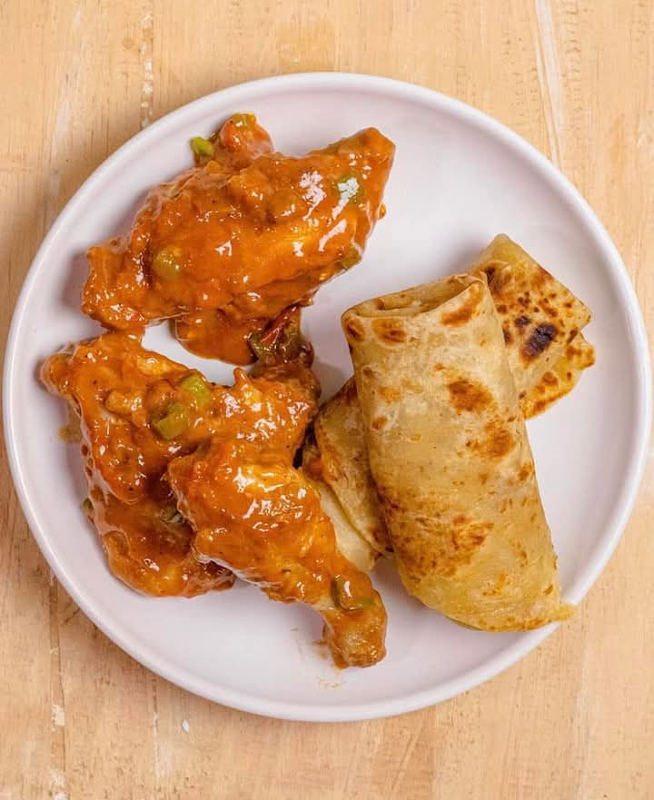

Home
Chapati with Chicken Stew

Description
Chapati, a soft and flaky flatbread, is a staple in East African and Indian cuisine. Paired with a rich and flavorful
chicken stew, this dish makes for a hearty and satisfying meal. The tender, spiced chicken in a thick tomato-based sauce
perfectly complements the warm, golden chapatis.
Ingredients
For the Chapati:
- 2 cups all-purpose flour
- ½ teaspoon salt
- 1 tablespoon oil or melted butter
- ¾ cup warm water (adjust as needed)
- Extra flour for dusting
- Oil for frying
For the Chicken Stew:
- 500g chicken, cut into pieces
- 1 tablespoon oil
- 1 small onion, chopped
- 2 cloves garlic, minced
- 1 teaspoon ginger, grated
- 2 tomatoes, diced
- 1 tablespoon tomato paste
- 1 teaspoon curry powder
- ½ teaspoon paprika
- ½ teaspoon cumin
- ½ teaspoon black pepper
- 2 cups chicken broth or water
- 1 carrot, chopped (optional)
- 1 green bell pepper, chopped (optional)
- Salt to taste
- Fresh coriander for garnish
Steps to Prepare
Preparing the Chapati:
- In a bowl, mix flour and salt. Add oil and rub it into the flour.
- Gradually add warm water while kneading to form a soft, non-sticky dough.
- Cover and let it rest for 30 minutes.
- Divide the dough into small equal portions and roll each into a ball.
- On a floured surface, roll out each ball into a thin, round shape.
- Heat a pan over medium heat and cook each chapati for about 1-2 minutes per side, brushing lightly with oil.
- Flip until both sides are golden brown, then remove and keep warm.
Preparing the Chicken Stew:
- Heat oil in a pan and brown the chicken pieces on all sides. Remove and set aside.
- In the same pan, sauté the onions until golden.
- Add garlic and ginger, cooking for another minute.
- Stir in tomatoes and tomato paste, cooking until soft.
- Mix in curry powder, paprika, cumin, and black pepper. Stir for a few seconds to release their aroma.
- Return the chicken to the pan, add broth or water, and let it simmer for 30-40 minutes until tender.
- Add carrots and bell peppers (if using) and cook for another 10 minutes.
- Adjust seasoning, garnish with fresh coriander, and serve hot with chapati.
Enjoy your flavorful chapati with chicken stew! 🍛🥘